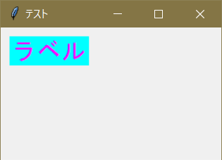
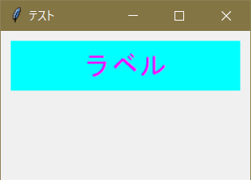

ラベルのフォントを変更するには font オプションを用いる。
lab = t.Label( font = ('MS Gothic', 20) ) #フォントは「MS ゴシック」、フォントサイズが２０。
ラベルの文字色の変更には foreground または fg オプションを、背景色の変更には background または bg オプションを用いる。
色の指定は16進数6桁のカラーコードを書くか、有名な色であれば英単語で書いてもちゃんと動作する。
lab = t.Label( foreground = '#FF00FF', background = 'cyan' ) #文字色が紫で、背景色がcyan（水色）
また、これらのオプションは組み合わせて使うことができる。
実行例３
import tkinter as t
app = t.Tk()
app.title( 'テスト' )
app.geometry( '250x150' )
lab = t.Label( text = u'ラベル', font = ('MS Gothic', 20), foreground = '#FF00FF', background = 'cyan' )
lab.place( x = 10, y = 10 )
app.mainloop()
実行結果

一方、place() にて width や height オプションを用いることでラベルの縦横の大きさを変更することができる。
lab = t.place( x = 10, y = 10, width = 230, height = 50 ) #横230px、縦50px
実行例４
import tkinter as t
app = t.Tk()
app.title( 'テスト' )
app.geometry( '250x150' )
lab = t.Label( text = u'ラベル', font = ('MS Gothic', 20), foreground = '#FF00FF', background = 'cyan' )
lab.place( x = 10, y = 10, width = 230, height = 50 )
app.mainloop()
実行結果

ここまでがラベルの基本的な内容で、ここからは少し発展的な話だ。